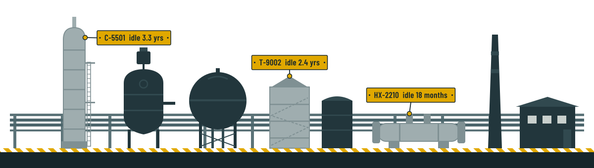

Product
Surplus asset tracking built for plants and corporate teams.
Investment recovery is our sole focus, and this platform is it — one shared record for every idle asset, a clear path from “idle” to “recovered,” and the approvals and compliance steps your team already follows, in one place.

A clear path for every asset
Each asset moves through the stages your team defines. Plants keep records current, and corporate approves each move, so the status you see is the status that’s true.
Stage names are configurable per company. One client’s “Idle” can be another’s “Surplus declared,” and each step is logged with who made it and when.
Redeploy before you sell
Selling an idle pump for a fraction of its price while another plant buys a new one is the most common way value leaks. Crucible makes idle assets visible to every site first.
A redeployment window gives other sites first claim. Requests record what the asset is for and the purchase it replaces, and one approval completes the transfer and adds to your total purchases avoided.
Compliance before listing, not after
Define the checklist once. An asset can’t move to sale until every item is complete, so nobody markets equipment that isn’t cleared to leave the site.
Typical items include decontamination certification, hazmat documentation, title and lien checks, and permit releases. You choose what belongs on yours.
Numbers your finance team will read
See how much book value is tied up, how long assets have been idle, what holding them costs each year, and what you’ve recovered or avoided buying.
Who does what
Roles keep plant teams moving without giving up corporate control.
| Plant users | Corporate approvers | |
|---|---|---|
| Add and update assets | Yes | Yes |
| Complete compliance checklist | Yes | Yes |
| Request another site’s idle asset | Yes | Yes |
| Log buyer inquiries and offers | Yes | Yes |
| Approve stage changes and transfers | Request only | Yes |
| Close out as sold or scrapped | Request only | Yes |
Also planned: single sign-on for your company identity provider. Each client’s data is kept in its own workspace.
See it with your own assets
Pilot partners load a real asset list, run it through the workflow, and tell us what’s missing.